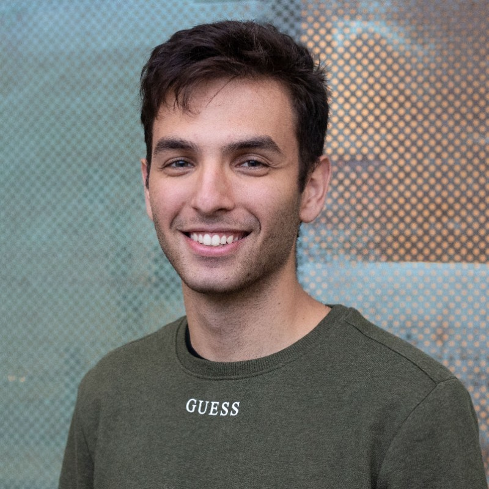

<div class="row flex-column-reverse flex-md-row py-2">
    <div class="col-md-8" id="bio">
        <h1>Blerim Abdullai</h1>
        <p class="text-justify">
            Hey there! I am a masters student at the <a href="https://www.utoronto.ca/">University of Toronto</a> advised by <a href="https://rvl.cs.toronto.edu/">Florian Skurti</a> 
            and <a href="http://asrl.utias.utoronto.ca/">Tim Barfoot</a> where I have been working on localization using radar for surface vessels. I am broadly interested in computer vision with practical applications 
            to robotics and have in the past worked with cameras, lidar, radar and sonar.
        </p>
        <p class="text-justify">
        Prior to this I completed my bachelors degree at the <a href="https://illinois.edu/">University of Illinois at Urbana Champaign (UIUC)</a> in computer engineering, where I worked with <a href="https://juliahmr.cs.illinois.edu/"> Julia Hockenmaier</a> on the Alexa Prize Simbot Challenge.
        I also worked at <a href="https://www.pnnl.gov/"> Pacific Northwest National Laboratory (PNNL) </a> on detecting fish near turbines using passive sonar and autonomous navigation for a surface vessel.
        </p>
        <p style="text-align:center">
            <a target="_blank" href="https://mailhide.io/">Email</a> &nbsp;/&nbsp;
            <a href="/~blerim/tn/BlerimAbdullaiJune14.pdf">CV</a> &nbsp;/&nbsp;
            <a href="https://github.com/bl33m">GitHub</a> &nbsp;/&nbsp;
            <a href="https://x.com/BlerimAbdullai">Twitter</a> &nbsp;/&nbsp;
            <a href="https://scholar.google.com/citations?user=wdKWt3gAAAAJ&hl=en">Google Scholar</a> &nbsp;/&nbsp;
            <a href="https://www.linkedin.com/in/blerimabdullai/">LinkedIn </a>
        </p>
    </div>
    <div class="col-md-4" style="z-index:4;">
        
    </div>
</div>
{% include publications.html %}
{% include projects.html %}
